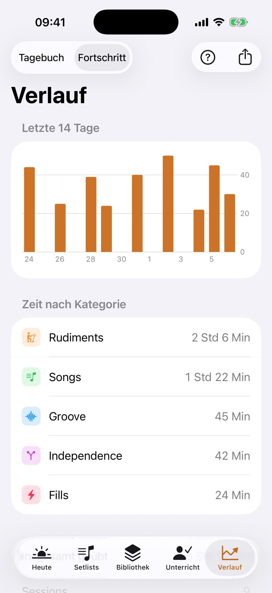

Das Übetagebuch fürs Schlagzeug
Üben mit Plan statt nach Gefühl.
Drumbook sagt dir, was heute dran ist, gibt den Takt vor und zeigt dir nach ein paar Wochen schwarz auf weiß, was besser geworden ist. Für iPhone und iPad.
- Im Test kostenlos
- Ohne Konto, deine Daten bleiben bei dir
- Ohne Werbung
Warum überhaupt
Eine Stunde Üben ist nicht eine Stunde Fortschritt.
Wer ohne Plan ans Set geht, spielt am Ende das, was ohnehin schon sitzt. Die drei Dinge, an denen es meistens hakt:
„Was übe ich heute?"
Die Antwort kommt aus dem Bauch, und der wählt bevorzugt das Angenehme. Die Übung, die schwerfällt, rutscht wochenlang durch.
„Was hat der Lehrer nochmal gesagt?"
Der eine entscheidende Satz aus der Stunde ist am Mittwoch weg. Und die Frage, die man stellen wollte, fällt einem erst auf der Heimfahrt wieder ein.
„Werde ich eigentlich besser?"
Fortschritt am Schlagzeug ist langsam und von innen kaum zu hören. Ohne Zahlen bleibt nur ein Gefühl, und das trügt in beide Richtungen.
Was Drumbook für dich tut
Vom ersten Takt bis zur nächsten Stunde.
Aufmachen und wissen, was dran ist
Sag Drumbook, wie viel Zeit du heute hast. Die Übeliste stellt sich selbst zusammen: Was dein Lehrer aufgegeben hat, kommt zuerst, und was zu lange liegen geblieben ist, rückt nach vorn. Die Übung, die schwerfällt, rutscht nicht mehr wochenlang durch.
Noch keine Übungen? Sechs zum Anfangen sind dabei, vom Paradiddle bis zum ersten Fill.

Beide Hände am Stock
Während du spielst, läuft alles von selbst: die Uhr für jede Übung, der Klick im richtigen Tempo, und nach Ablauf der Zeit der Wechsel zur nächsten Übung, mit kurzer Pause und einem Signal, das du auch am Set spürst. Du musst das Handy nicht anfassen.
Den Refrain so oft, bis er sitzt
Leg dein Notenblatt in die App und starte den Song aus deiner Mediathek. Die Noten laufen mit, Zeile für Zeile, ohne dass du blätterst. Hakt es an einer Stelle, markierst du sie und spielst genau diesen Teil zur Aufnahme, so oft du willst.

Nach vier Wochen schwarz auf weiß
Jede Session landet im Verlauf. Du siehst, wie viel du geübt hast, wohin die Zeit geflossen ist und wo das Tempo gestiegen ist. Ein Wochenziel und die Zahl der Tage in Folge halten dich dran, ohne zu drängeln.

Mit Unterricht
Dein Lehrer sieht, was du geübt hast.
Was in der Stunde aufgegeben wird, steht am Mittwoch noch da und kommt in deiner Übeliste zuerst. Fragen, die beim Üben auftauchen, sammelt die App für die nächste Stunde. Und vor dem Unterricht machst du mit zwei Tipps einen Bericht als PDF: Übezeit, Tempo, was liegen blieb.

Für Lehrer ohne Aufwand
- Ihr Lehrer braucht nichts einzurichten, nicht einmal ein iPhone. Er bekommt den Bericht ausgedruckt oder per Mail.
- Eine Zeile sagt mehr als zehn Minuten Nachfragen: „96 von 130, von 92 gekommen".
- Ohne Unterricht geht alles genauso. Der Bereich bleibt dann einfach leer.
Wer dahintersteckt
Gebaut von einem, der selbst lernt.
Ich heiße Silvio und lerne selbst Schlagzeug, mit Lehrer, Übungsbuch und zu wenig Zeit. Drumbook habe ich zuerst für mich gebaut, weil ich nach jeder Woche nicht mehr wusste, was ich eigentlich geübt hatte. Jede Funktion ist entstanden, weil beim Üben etwas gefehlt hat. Seit dem Sommer übe ich jeden Tag damit, und seit September testen andere Schlagzeuger mit.
Was du in Drumbook einträgst, bleibt auf deinem Gerät und in deiner eigenen iCloud. Ich sehe davon nichts, und es gibt nichts, was mitzählt, wie du die App benutzt.
Preis
Alles drin, ein Preis.
Jetzt: kostenlos
Während des Tests kostet Drumbook nichts. Du bekommst jede neue Fassung, sobald sie fertig ist.
Später: 3 bis 5 € im Monat
Wenn Drumbook im App Store ist, als Abo, mit einem deutlich günstigeren Jahrespreis. Vorher kannst du es in Ruhe ausprobieren.
Immer: alle Funktionen
Keine abgespeckte Gratisfassung und keine Funktion, die extra kostet. Werbung gibt es nicht.
Fragen
Was Leute wissen wollen.
Wie komme ich an die App?
Drumbook ist noch nicht im App Store, sondern im Test über TestFlight, Apples kostenlose App für Testfassungen. Trag unten deine Adresse ein, und du bekommst eine Einladung per Mail. Dann TestFlight laden, Drumbook installieren, fertig.
Muss ich beim Test etwas tun?
Nein. Benutz die App so, wie du übst. Wenn dir etwas auffällt, kannst du es direkt aus der App melden, mit einem Bildschirmfoto. Jede Rückmeldung wird gelesen.
Brauche ich einen Schlagzeuglehrer?
Nein. Wer allein übt, benutzt Übeliste, Uhr, Metronom und Verlauf genauso. Der Unterrichts-Teil bleibt dann einfach leer.
Hört man das Metronom über das Schlagzeug?
Über den Lautsprecher eines Telefons nicht zuverlässig. Am Set gehören Kopfhörer dazu. Werden sie abgezogen, hält der Klick an, statt plötzlich über den Lautsprecher zu spielen.
Gibt es Drumbook auch für Android?
Noch nicht. Zuerst kommen iPhone und iPad, Android ist danach geplant. Ein Datum gibt es noch nicht.
Wo liegen meine Daten?
Auf deinem Gerät. Hast du iPhone und iPad, gleichen sie sich über deine eigene iCloud ab. Dazu kommt eine Sicherung als Datei, die du selbst ablegst und auf einem neuen Gerät wieder einliest. Datenschutz im Detail →

Heute Abend mit Plan üben.
Trag deine Adresse ein, und du bekommst eine Einladung zu TestFlight, Apples kostenloser Test-App. Das ist die einzige Mail von mir, danach lösche ich deine Adresse. Neue Testfassungen meldet dir TestFlight selbst.
Öffnet dein Mailprogramm mit fertigem Text. Geht das bei dir nicht, schreib einfach von Hand an silvio@drumbook.de.
Deine Adresse wird nur dafür benutzt, dir diese eine Nachricht zu schicken, und danach gelöscht.